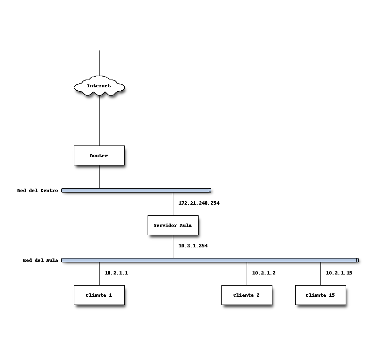
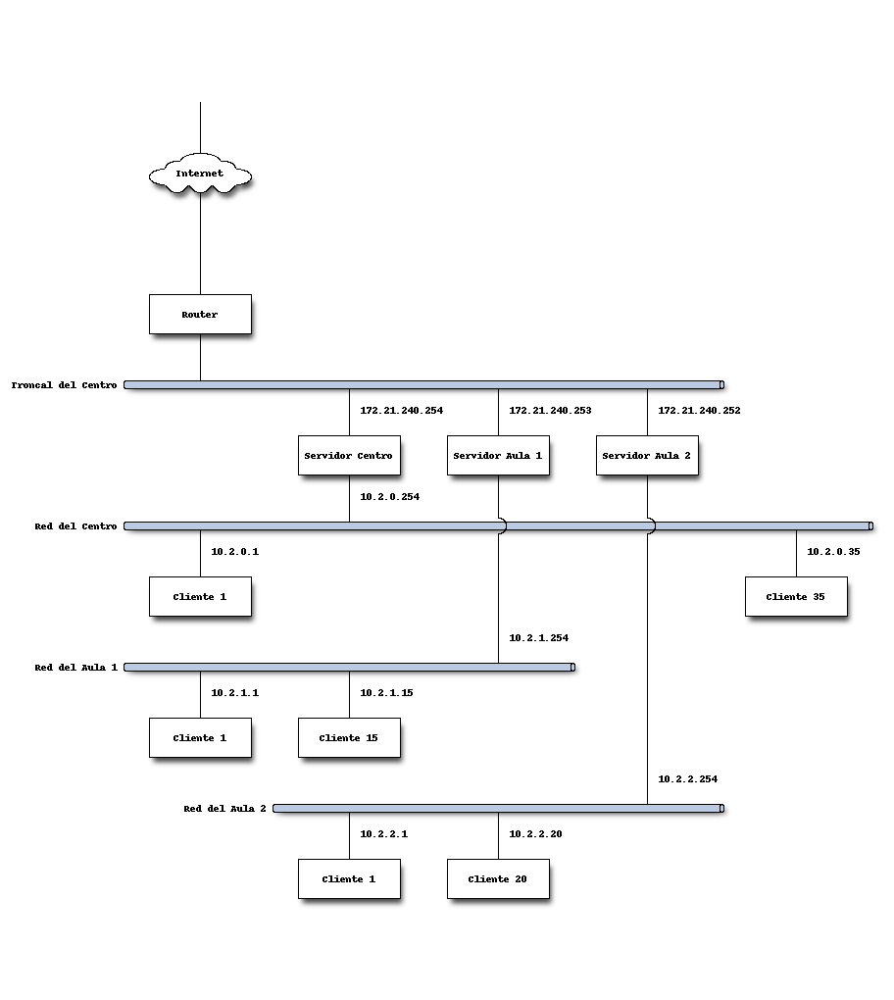
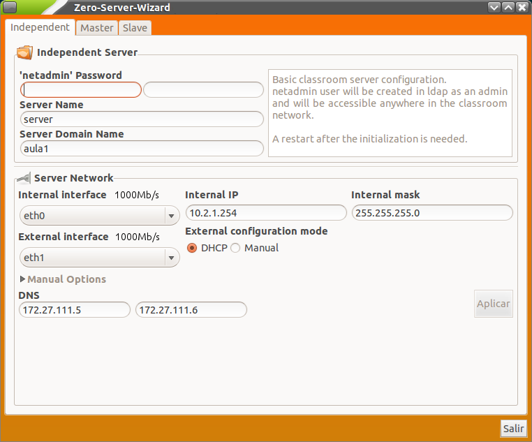

Al arrancar la máquina con el nuevo sistema, en primer lugar se muestra una ventana para el inicio de sesión de usuario. Introduzca el nombre de usuario y contraseña del usuario (los que haya especificado durante la instalación).
Nota
Le recordamos que es muy recomendable realizar una actualización del servidor antes de comenzar la configuración inicial del mismo.
En este punto debe decidir (en función del modelo que desea poner en marcha) el tipo de servidor que ha de instalar. Existen dos opciones según la funcionalidad que desee obtener y los recursos de los que disponga en el centro:
Este modelo está pensado para soportar la configuración de aulas independientes. Es la elección lógica cuando los únicos ordenadores del centro están localizados en una o varias aulas. Las ventajas de este modelo son las siguientes:

En el ejemplo de la figura se plantea un esquema de un aula de informática con 15 ordenadores cliente. Se puede observar que las direcciones IP de dentro del aula corresponden todas al rango 10.2.1.X (reservándose -como convenio- la 254 para el servidor). En la tarjeta externa del servidor aparece una IP interna a la Red Corporativa de Aulas de la Conselleria. Se puede obtener dinámicamente (mediante DHCP) o bien asignar manualmente. En este caso, que sólo existe un servidor en el centro, se recomienda usar la acabada en 254.
Cuando un centro docente dispone de más ordenadores fuera de las aulas de informática (sala de profesores, biblioteca, un equipo por cada aula normal, departamentos didácticos, etc.) se puede extender el modelo de aula a todo el centro. Podemos, por ejemplo, utilizar un servidor para la biblioteca, otro para los departamentos y sala de profesores y otro para las aulas tradicionales. O bien un sólo servidor para todos los equipos del centro que no estén en las aulas de informática.
Las ventajas que se pueden obtener de este modelo son:
Es decir, con nuestro usuario y contraseña, podemos acceder a nuestro perfil (carpeta personal, departamental, grupos, etc) desde cualquier equipo cliente del centro.
Para ello hay que cumplir con una serie de recomendaciones:

Siguiendo el esquema, podemos observar una serie de patrones en las direcciones IP que corresponden a las recomendaciones de arquitectura de red de LliureX:
Consejo
Como curiosidad técnica, en el funcionamiento interno del modelo de centro se crea una red alias en la red troncal. De esta manera se simplifica el direccionamiento entre los servidores del centro: 10.3.0.254 (centro), 10.3.0.1 (aula 1), 10.3.0.2 (aula 2), etc.
El servidor Lliurex 13.06 incluye un asistente llamado Zero Server Wizard que permite realizar todo el proceso de configuración de manera automática y en cómodos pasos. Para acceder a esta herramienta de configuración automática vaya al menú Aplicaciones -> Administración de LliureX -> Centro de Control LliureX. Una vez dentro del Centro de Control de LliureX acceda a la pestaña Sistema y ejecute Zero Server Wizard. Se abrirá una ventana con el siguiente aspecto:
En la nueva versión de LliureX se ha añadido el usuario netadmin para la administración global. Este usuario se genera al inicializar el servidor con el asistente (zero-server-wizard) y lo podremos utilizar para entrar en cualquier equipo de la red (ya que se da de alta en LDAP y tiene permisos de administración).
Nota
Hay que diferenciar el usuario netadmin del usuario que creamos al instalar el servidor (que será administrador local y no podrá entrar en el resto de equipos de la red).